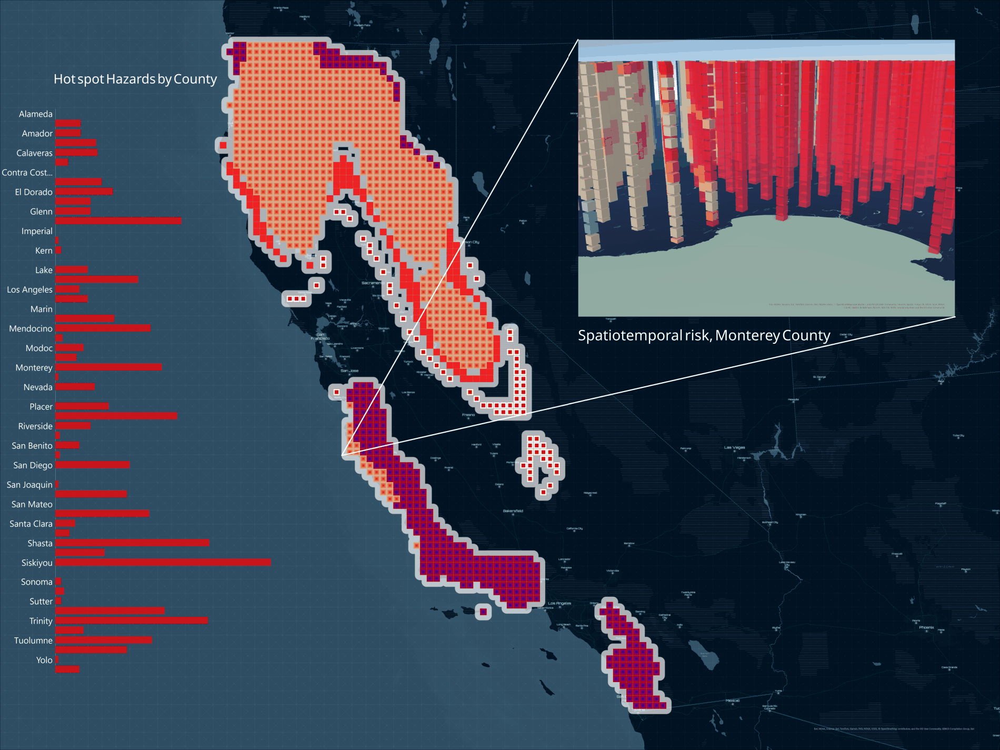

Where California's Fire Risk Is Going
Not where California has burned — where its fire regime is changing. An emerging hot spot analysis built on a space-time cube, separating places that are intensifying from places that burned early in the record and have since gone quiet.

The question
A century of fire suppression let fuels accumulate just as the climate warmed and the wildland-urban interface expanded into them. The usual response is a map of where fire has occurred, which treats a burn from the start of the record and one from last season as the same fact. The question worth asking is directional: which parts of the state are on a trajectory?
Method
A conventional hot spot analysis collapses time, so it cannot separate a place with a long steady history from one that has caught fire only recently but is accelerating. A space-time cube keeps both axes — fire events binned into cells that are simultaneously spatial and temporal — and yields a classification of trajectories rather than a single intensity value:
- New — the most recent step is a hot spot; earlier ones were not
- Consecutive / intensifying — an unbroken recent run, clustering growing stronger
- Persistent — hot throughout, no trend either way
- Diminishing / historical — past clustering that has since weakened
A historical county and an intensifying one can have identical total burned area. They call for different responses, and an accumulated-footprint map cannot tell them apart.
Reading the layout
- The main map carries the hot spot classification statewide, on a dark basemap so the categorical colours stay separable.
- The county chart summarises hazard counts per county — Siskiyou, Trinity, and Shasta stand out, alongside Monterey, Mendocino, and Riverside.
- The 3D inset shows the cube itself for Monterey County: columns rising through time, each block coloured by its state in that step.
What it supports
Treating intensifying, persistent, and new hot spots together as "high risk" makes the output usable elsewhere — it is what the wind siting project intersects against turbine locations.
The categories describe the statistical behaviour of the record, not causation. An intensifying county is not thereby explained: fuel, climate, ignition sources, reporting changes, and a shifting wildland-urban boundary all remain candidates. The analysis narrows where to look.